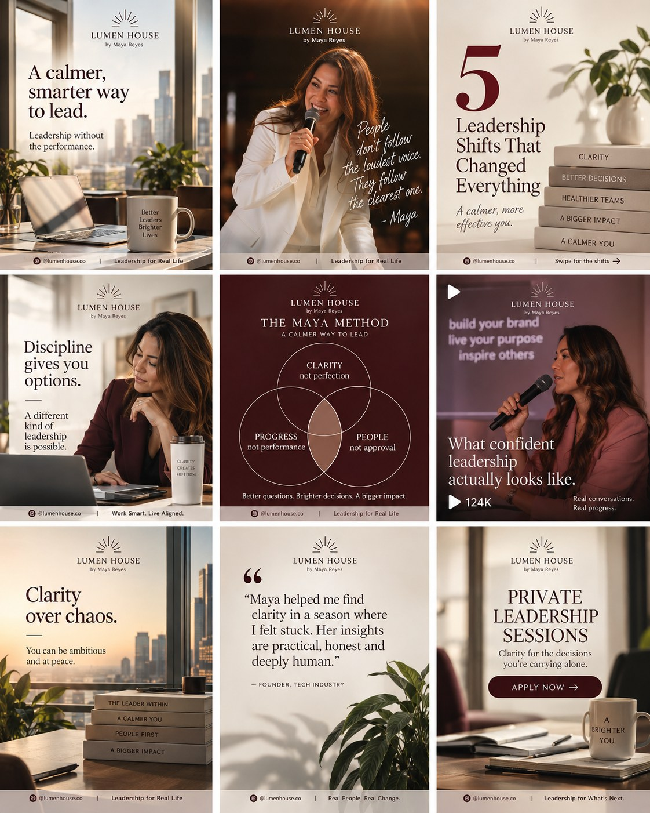

Concept study

Lumen House
Positioned Maya Reyes as the calm, clear alternative to performative leadership—then translated that point of view into a recognizable content and offer system.
Founder positioningEditorial systemOffer journey